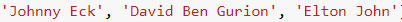

שם התרגיל הוא “היי שלום”, מסתבר לפי ויקיפדיה ששם השיר בעברית של Goodbye Yellow Brick Road הוא “היי שלום, דרך האבנים הצהובות”.
4 לייקים
נייס!!! תהיתי אם מישהו יעלה על זה
100 נק’ לגריפינדור
3 לייקים
שתים דובים אלמוג כתבה, גיזה רפרנס לתוצאת חיפוש המיקום בוויקיפדיה? 
גם אורפז, עם הרפרנס לסיפור אלישע והדובים. 
ובנוגע לגיזה – לא 
לייק 1
מהה אבל זה בדיוק שם 
לייק 1
בתרגיל שטוחלנדיה מופיעה אחת מהדוגמאות שהיא המילה hash. אני תוהה אם זה רמז למימוש של set.
מחברת 3:

אחד עמד על הידיים, אחד על הראש והשלישי עדיין עומד?
לייק 1
חחחחח  לא לעוד הרבה זמן
לא לעוד הרבה זמן
ככה אתה מסכם את האביר?
כל מה שצריך להאמר נאמר כבר לי נשאר רק להתלוצץ על זה (:
“Place gunpowder beneath the house of lords”
From the gunpowder plot - Guy Fawkes, 1605
“Remember remember the 5th of November the gunpowder treason and plot”
אחד הסרטים האהובים עליי
2 לייקים
הגיזה זה בקטע של הנביא עם הרטוב והיבש?
לא
חבר’ה אתם ממש חריפים, השבוע היה לי ממש קשה לזהות רפרנסים.
(וגם שחשבתי שאני בכיוון, טעיתי …
למשל באיזשהו רפרנס לצבי הנינגה הופיע השם Krang, ואני בכלל חשבתי שזה קורג
הדמות הגאונית הזאת שהייתה בסרט תור!)
צירפתי קישור כי היא קורעת כל פעם מחדש 
https://www.youtube.com/watch?v=_7FFQPmGgUQ
3 לייקים